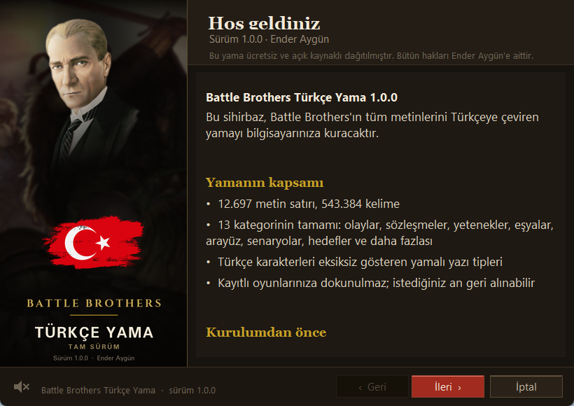
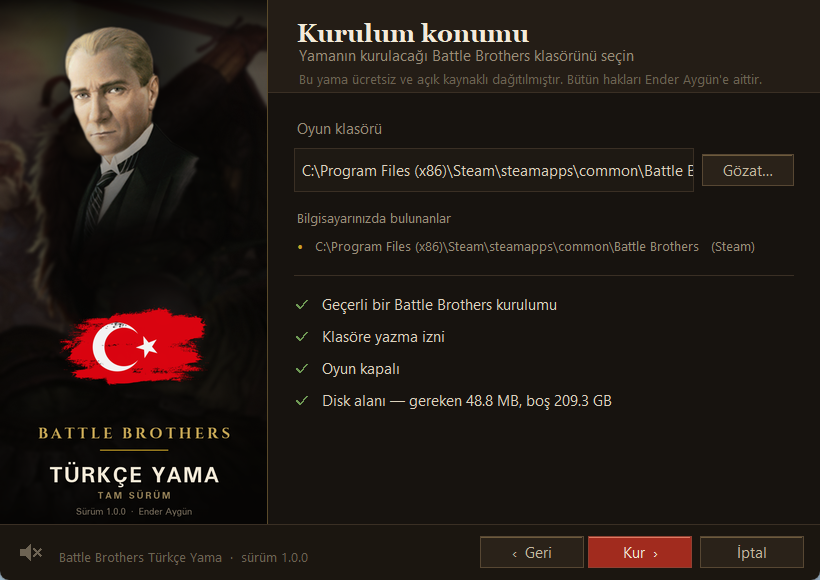
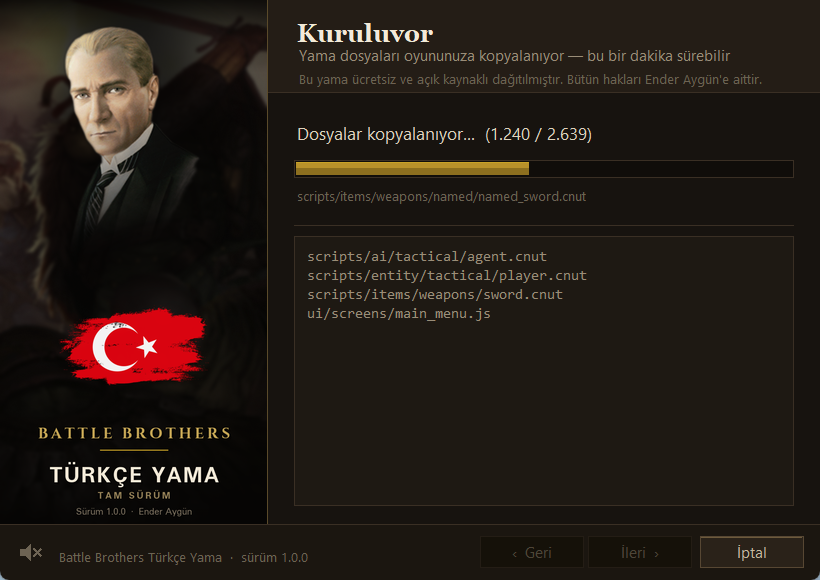
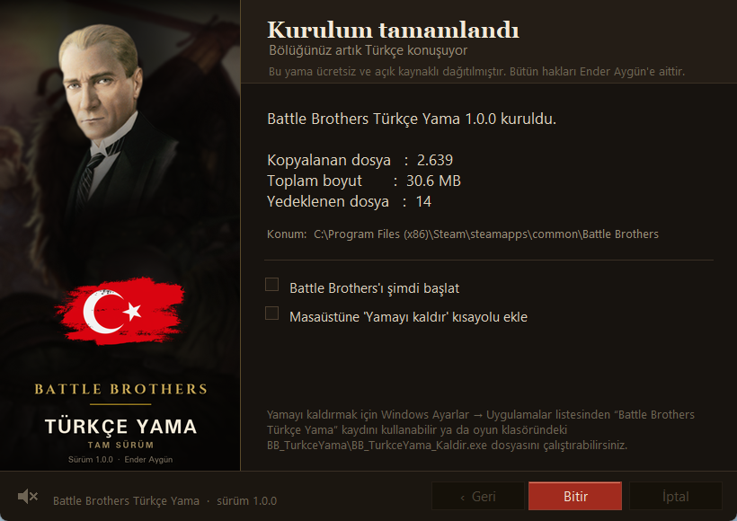

Battle Brothers
Battle Brothers Türkçe yama var mı? Evet. Oyunun büyük çoğunluğunu — olaylar, sözleşmeler, yetenekler, eşyalar, arayüz ve daha fazlasını — Türkçeye çeviren ücretsiz, açık kaynaklı bir kurulum sihirbazı. Aktif geliştiriliyor.
⬇ Yamayı indir (v1.0.3, 50 MB) GitHub'da görüntüle →.exe dosyasını indirin.



Metinler ileri düzey yapay zekâ araçları (Codex, Gemini, Claude) eşliğinde, insan kontrolünden geçirilerek çevrildi — makine çevirisi değildir; oyunun kendi dosya biçimi zaten buna izin vermiyor. Terim tutarlılığı bir sözlük ve özel-ad kurallarıyla korundu.